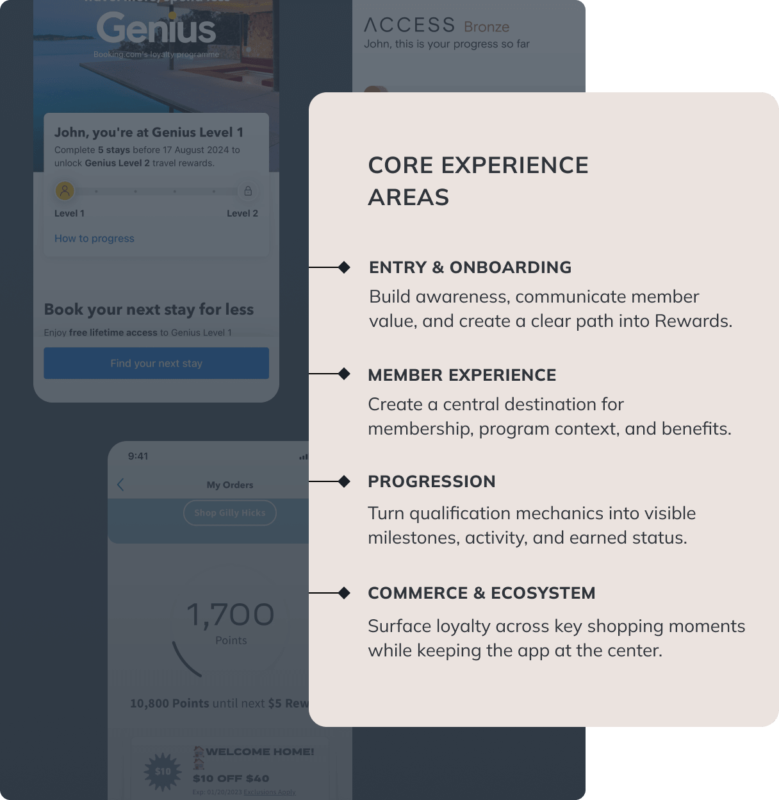
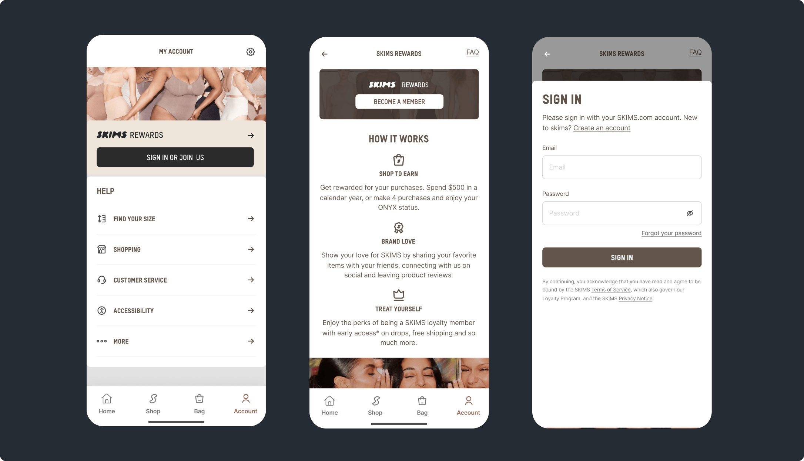
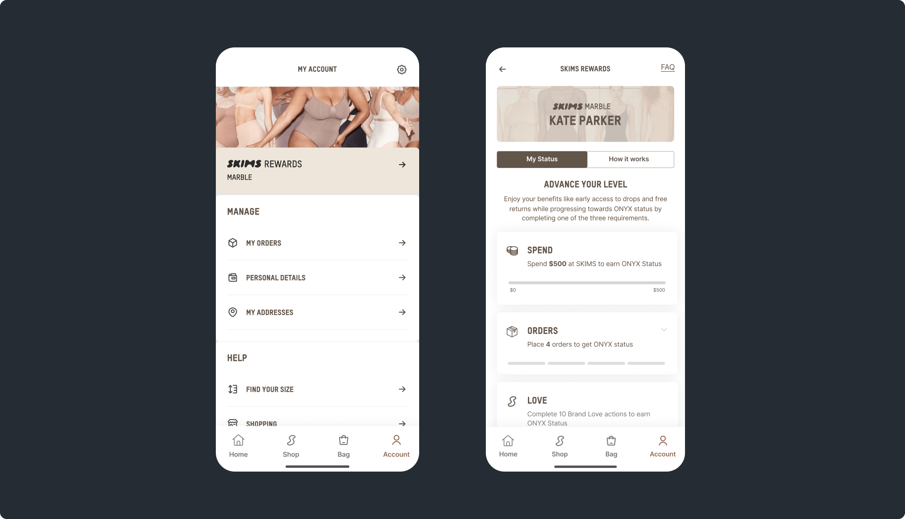
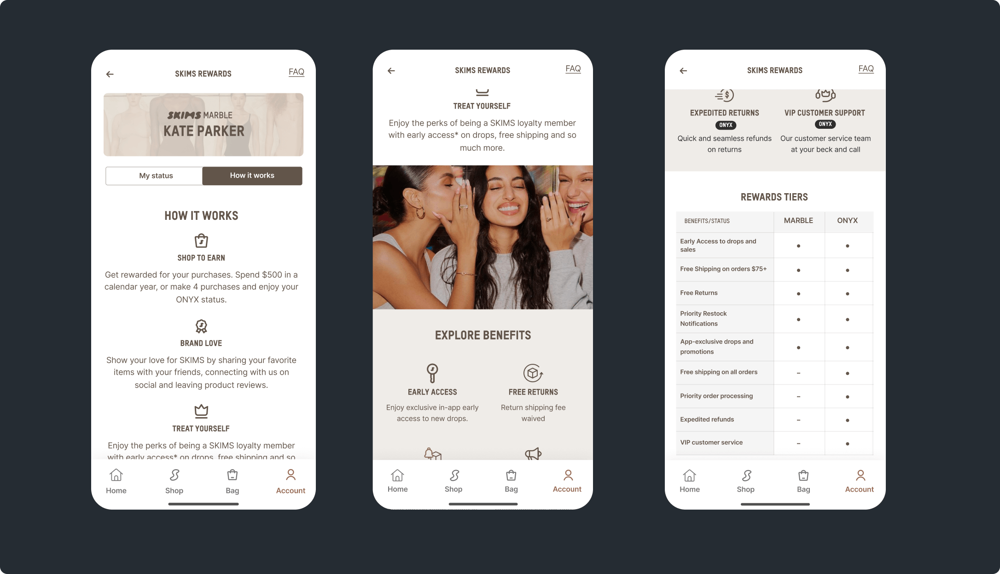
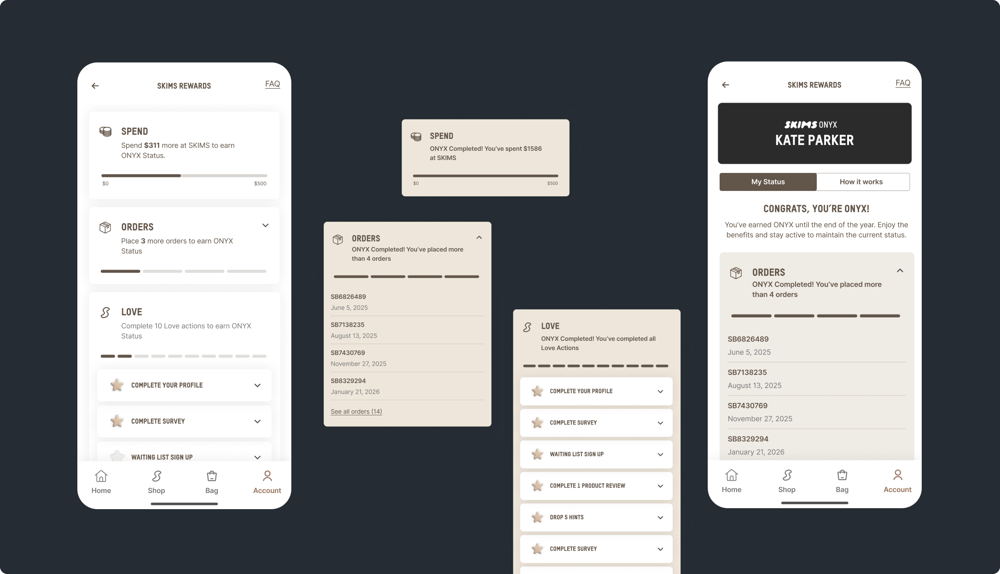
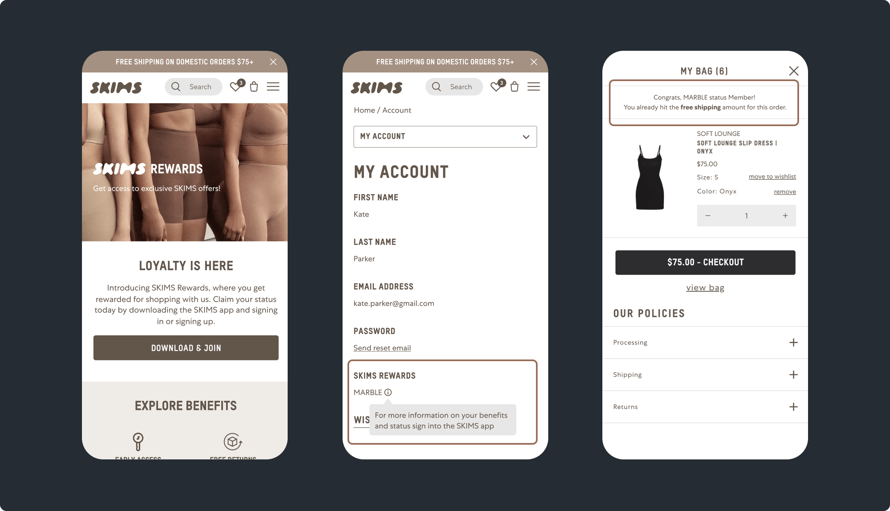

Senior Product Designer
Building an app-led loyalty experience designed to support membership, progression, and ongoing engagement
•Product / UX Definition
•Research & Competitive Benchmarking
•Feature Architecture
•UX & Interaction Design
•Cross-platform Integration
SKIMS was introducing a new tier-based loyalty program, with the mobile app as the primary product experience. I worked on the core in-app experience for membership status, progression, and benefits, then extended the system across supporting web and commerce touchpoints.
The goal was to create an app-led loyalty experience that could strengthen retention by making membership valuable, easy to understand, and relevant throughout the customer journey.
•Increase customer retention and repeat engagement
•Make membership value clear enough to drive sign-up and participation
•Surface Rewards at the right moments across app, web, and commerce

The project began with product and technical requirements outlining the loyalty model, platform constraints, and how Rewards needed to connect across the SKIMS app, web, and commerce experience.
As Senior Product Designer, I worked with stakeholders to synthesize those requirements alongside research and competitive benchmarking, then shaped the loyalty experience across four key areas of the member journey: Entry & Onboarding, Member Experience, Progression, and Commerce & Ecosystem.
Once the core journeys were established, I iterated on the hub structure, consolidated supporting information, and worked through guest and member states, progression and completion scenarios, and cross-platform touchpoints to create a cohesive loyalty system.
For new and signed-out customers, the entry experience balanced education with conversion by introducing Rewards benefits and clarifying how membership worked, while offering a direct path to join or sign in.

Rewards was surfaced directly within Account, creating a natural entry point into the loyalty experience. Creating the loyalty hub required working through what members needed to see first and what could remain secondary. Through iteration, status, progress, and ways to qualify were consolidated into one landing view, with benefits and program details kept one tap away.

A dedicated How It Works tab kept program education inside the hub, giving members one place to understand how Rewards worked, what each tier included, and what progressing to Onyx could unlock. Icon-led benefits and a tier comparison made the program easy to scan without leaving the experience.

Members could qualify for Onyx through different paths, each with its own requirements and progress. The experience translated those rules into clear checkpoints, with more detail available when needed. As milestones were completed, the interface shifted from tracking progress to recognizing earned status.

The app became the core loyalty and retention experience, while web and commerce touchpoints extended Rewards across the ecosystem—driving app adoption, creating clear entry paths, and resurfacing membership value at key moments in the journey.
